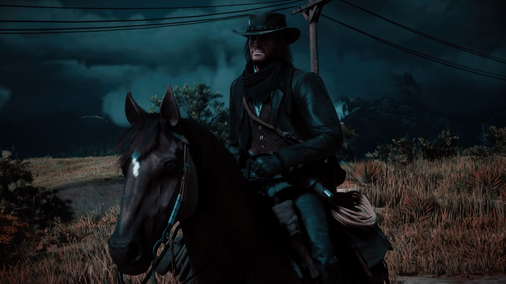
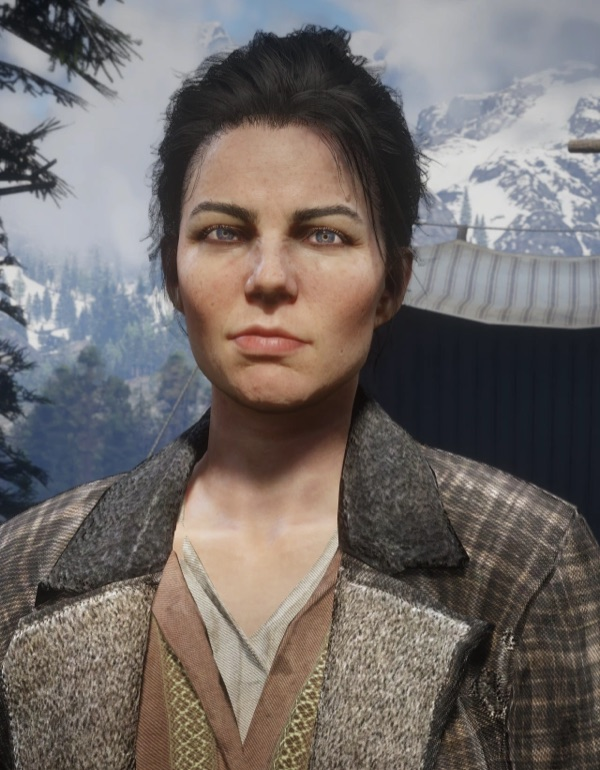
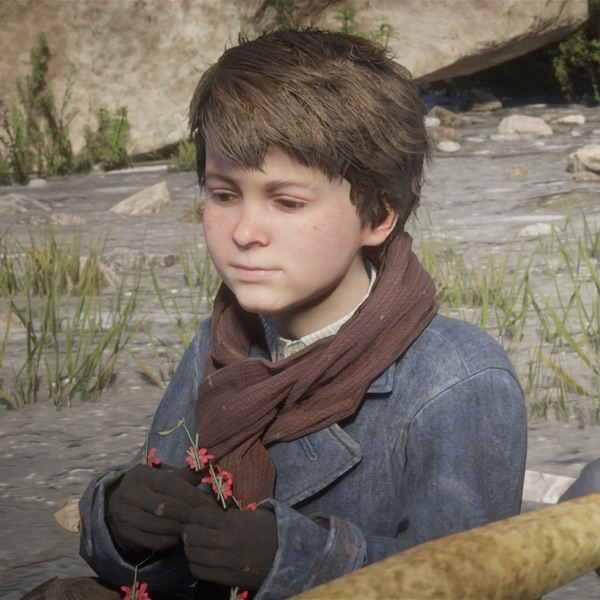
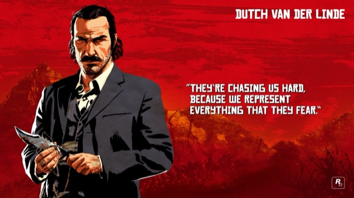
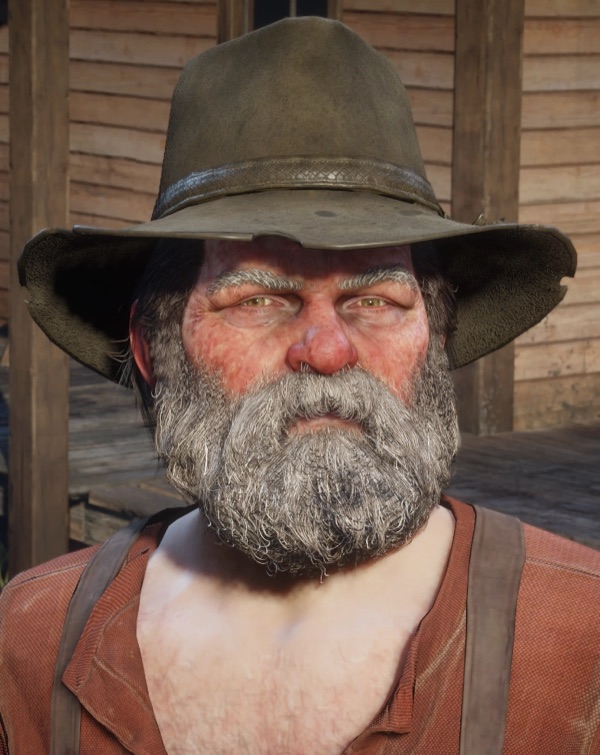
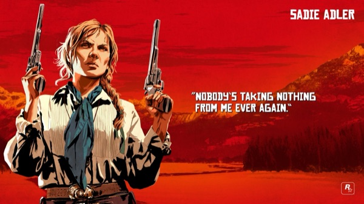
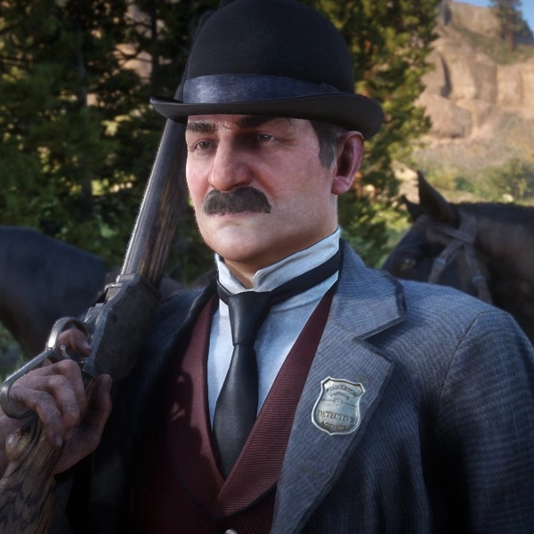
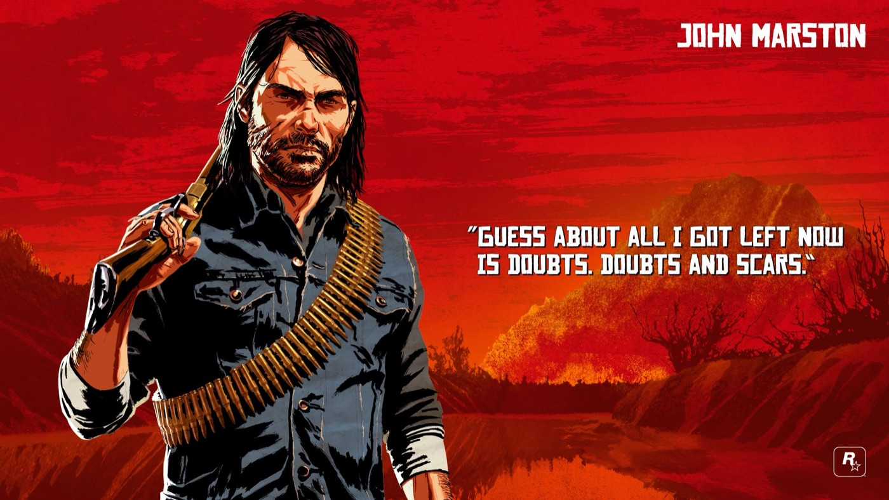

Character · Van der Linde gang
John Marston
John Marston is the central protagonist of Red Dead Redemption (2010) and a major character in its prequel, Red Dead Redemption 2 (2018). A former member of the Van der Linde gang turned reluctant family man, John is forced by government agents to hunt down his old gang in 1911, in a desperate bid to win back his wife and son.
Where Red Dead Redemption 2 gave players Arthur Morgan, the original game made John its hero. His story, his redemption, his coercion and his final stand, is the emotional spine the whole series is built around. He was portrayed through performance capture by Rob Wiethoff.
- Born
- 1873
- Died
- 1911 (aged about 38)
- Status
- Deceased
- Nationality
- American
- Affiliation
- Van der Linde gang (former)
- Role
- Outlaw turned rancher; protagonist of RDR1
- Family
- Abigail Marston (wife), Jack Marston (son)
- Games
- Red Dead Redemption, Red Dead Redemption 2, Red Dead Online
- Voiced by
- Rob Wiethoff
Biography
Origins and early life
John Marston was born on July 3, 1873, to a Scottish immigrant father and a mother who died giving birth to him. His father died when John was eight, leaving him orphaned, and he was raised in an orphanage before running away as a teenager. Around 1888, the outlaw Dutch van der Linde took the young John into the Van der Linde gang, raising him much as he had Arthur Morgan a decade earlier.
The Van der Linde gang
John grew up an outlaw under Dutch and Hosea Matthews, becoming a capable gunman and one of the gang's core members. It was in the gang that he met Abigail Roberts, and the two had a son, Jack. When Jack was born, John briefly abandoned the gang, a desertion that strained his bond with Arthur for years before he returned.

Red Dead Redemption 2 (1899)
In the prequel, John is a supporting character through the gang's slow collapse in 1899. Wounded and sidelined for part of the story, he is ultimately saved by Arthur, whose sacrifice buys John, Abigail and Jack their escape. The game's epilogue is then played as John, as he takes honest work and eventually buys a ranch at Beecher's Hope to build a new life.
A rancher at Beecher's Hope
By 1911, John has spent years trying to bury the outlaw in him: a husband, a father and a rancher. It is exactly that hard-won peace the government uses against him when his past finally comes calling.
Personality
John is blunt, hot-tempered and self-deprecating, quicker to act than to reflect, the rougher counterpart to Arthur's introspection. He is haunted by the things he did as an outlaw and desperate to be a better man for his family, even as he doubts he can ever truly change.
Beneath the gruff exterior is fierce devotion: nearly everything John does is, ultimately, for Abigail and Jack. His arc is the original Red Dead's thesis, that a violent man can still choose, too late, to die for something good.
Relationships

Abigail Marston
John's wife, a former prostitute who joined the gang and became the mother of his son. The life John fights to protect is, above all, hers and Jack's.

Jack Marston
John and Abigail's son. He becomes the final playable character of Red Dead Redemption and, in 1914, avenges his father.

Arthur Morgan
The older "brother" who raised alongside John in the gang. Their bond frays when John deserts, but in the end Arthur sacrifices himself so John and his family can go free.

Dutch van der Linde
The gang leader who took John in as a boy and the closest thing he had to a father, until John is later forced to hunt him across the mountains in 1911.

Uncle
An aging, work-shy old outlaw who attaches himself to the Marston household and helps run the ranch at Beecher's Hope.

Sadie Adler
A fellow survivor of the gang's fall who stays close to the Marstons and helps John settle old scores in the epilogue.

Edgar Ross
The Bureau of Investigation agent who coerces John into hunting his former gang, then betrays him. Jack kills Ross in 1914.
Death and fate
In 1911, Bureau of Investigation agents led by Edgar Ross hold Abigail and Jack to force John to hunt down his former gang members, Bill Williamson, Javier Escuella and finally Dutch himself. With the work done, the government turns on him: soldiers and agents surround the ranch at Beecher's Hope.
John gets Abigail and Jack to safety on horseback, then steps out of the barn to face the firing squad alone. He is gunned down in a hail of bullets. Three years later, in 1914, a grown Jack Marston tracks Edgar Ross to a riverbank and kills him, closing the circle of revenge. John's death is remembered as one of the most powerful endings in video games.

Behind the scenes
John was performed by Rob Wiethoff through performance capture in both Red Dead Redemption (2010) and Red Dead Redemption 2. A relative newcomer when he landed the original role, Wiethoff largely stepped away from acting afterward, then returned to reprise John for the prequel.
John was Rockstar's Red Dead lead before Arthur Morgan existed; Red Dead Redemption 2 was written, in part, to deepen and recontextualise the man players already knew from 2010.
Reception and legacy
As the face of the original Red Dead Redemption, John Marston became one of gaming's iconic Western protagonists, and his 1911 death was widely cited among the most affecting endings of its era.
Red Dead Redemption 2 later reframed him through Arthur Morgan's eyes. While much of the prequel's praise went to Arthur, John remains the character the entire series pivots around, the man whose redemption gave the franchise its name.
Trivia
- John is playable in Red Dead Redemption, in the Red Dead Redemption 2 epilogue, and in the Undead Nightmare expansion.
- His distinctive facial scars are never fully explained in-game; he does not yet have them during the events of RDR2's main story.
- He is one of the rare Rockstar protagonists to die within his own story, as Arthur Morgan would later.
- After John's death, his son Jack becomes the final playable character of Red Dead Redemption.